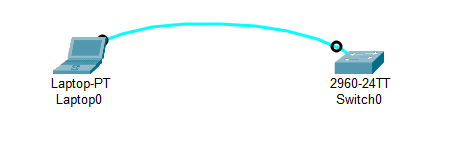
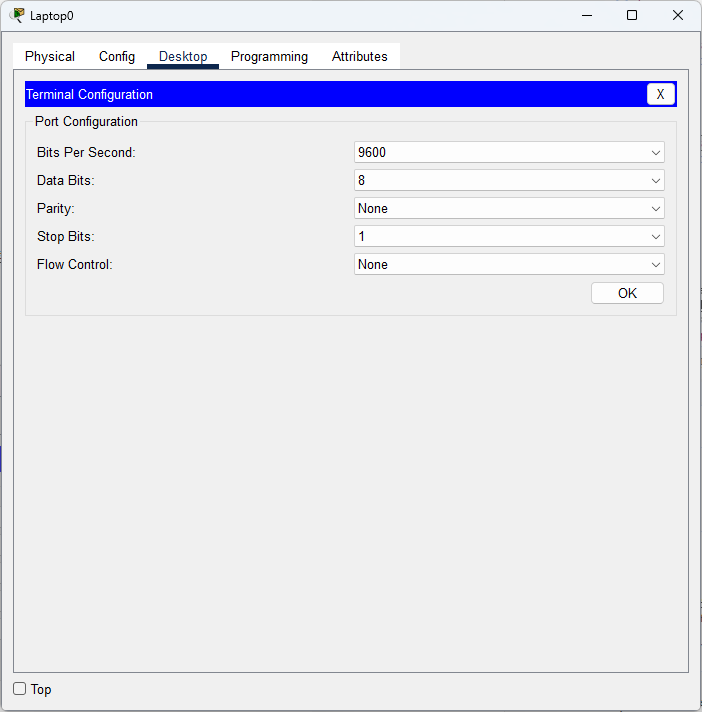

1台 Laptop
1台 2960 交换机


Switch>
可以简写命令
也可以使用 Tab 补全命令
Switch>en Switch#
Switch#conf ter Enter configuration commands, one per line. End with CNTL/Z. Switch(config)
Switch(config)#hostname SW2019 SW2019(config)#
SW2019(config)#enable ? password Assign the privileged level password secret Assign the privileged level secret SW2019(config)#enable pass 2026
先 end 直接回到特权模式 #
再 exit 退回到用户模式 >
SW2019>en Password:
SW2019(config)#no ena pass
SW2019(config)#no hostname
查看设备信息 show ter
查看端口信息 show interfaces status
查看运行配置 show running-config